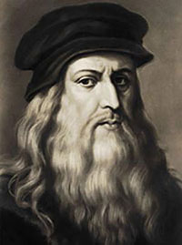
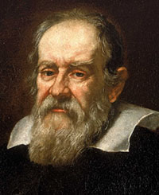
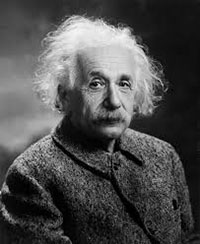

Biografias
Conheça algumas pessoas importantes para a história

Se destacou como:
- Cientista
- Matemático
- Engenheiro
- Inventor
- Anatomista
- Pintor
- Entre outros

Se destacou como:
- Matemático
- Lógico
- Criptoanalista
- Cientista da Computação

Se destacou como:
- Físico
- Matemático
- Astrônomo
- Filósofo

Se destacou como:
- Físico
- Matemático
- Astrônomo
- Alquimista
- Filósofo Natural
- Teólogo
- Cientista

Se destacou como:

Se destacou como:

Se destacou como:
- Cientista
- Físico
- Biólogo
- Astrônomo
- Astrofísico
- Cosmólogo
- Entre Outros
Se destacou como:

Se destacou como:
Se destacou como: